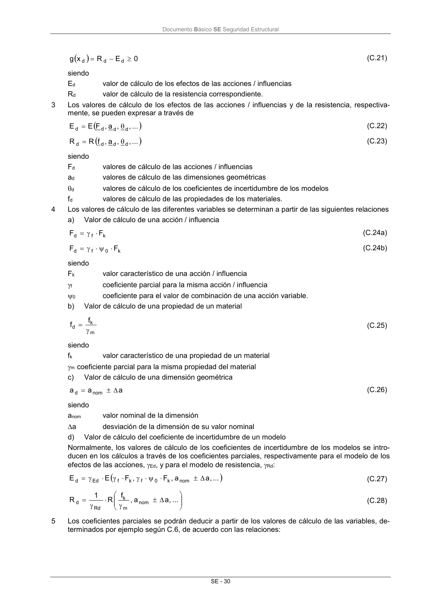
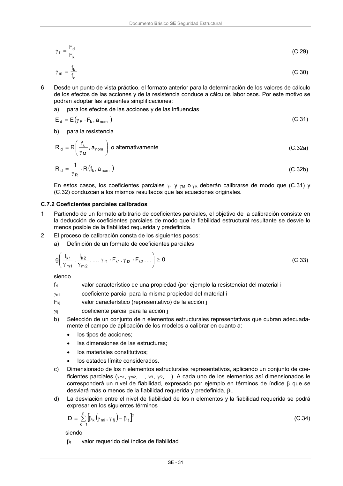
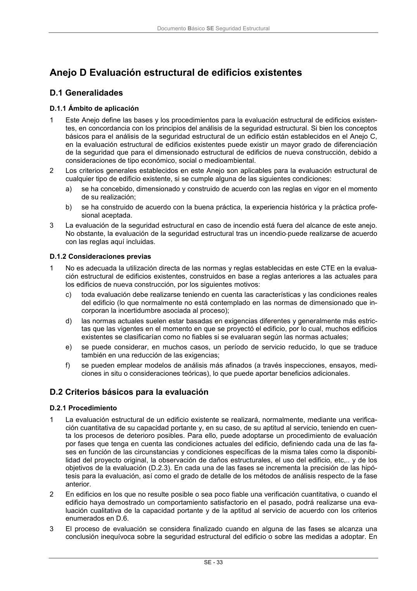

DB-SE · C.7 El formato de los coeficientes parciales · versión 2019-12-20 · capa oficial
Formatos: JSON compacto · Markdown · PDF fuente
Ámbito del documento · texto del ámbito · documento y tablas
ID técnico a0070 · PDF pág. 35-39 · jerarquía no validada por persona · contrastado con el literal de la página 35 (candidato tipográfico); no validado por persona · padre: raíz
C.7 El formato de los coeficientes parciales C.7.1 Coeficientes parciales basados en valores de cálculo 1 Los métodos probabilistas implícitos que se utilizan normalmente en la práctica a efectos del di- mensionado de las estructuras, no emplean directamente valores de cálculo para las variables, xd. Las variables aleatorias se introducen mediante sus valores representativos (según 3), que se em- plean con un conjunto de coeficientes parciales para las acciones e influencias y para la resistencia (según 4). 2 En la mayoría de los casos, la condición que debe cumplirse puede expresarse en los siguientes términos Documento Básico SE Seguridad Estructural SE - 30 0 E R x g d d d (C.21) siendo Ed valor de cálculo de los efectos de las acciones / influencias Rd valor de cálculo de la resistencia correspondiente. 3 Los valores de cálculo de los efectos de las acciones / influencias y de la resistencia, respectiva- mente, se pueden expresar a través de ... , , a , F E E d d d d (C.22) ... , , a , f R R d d d d (C.23) siendo Fd valores de cálculo de las acciones / influencias ad valores de cálculo de las dimensiones geométricas d valores de cálculo de los coeficientes de incertidumbre de los modelos fd valores de cálculo de las propiedades de los materiales. 4 Los valores de cálculo de las diferentes variables se determinan a partir de las siguientes relaciones a) Valor de cálculo de una acción / influencia F F k f d (C.24a) F F k 0 f d (C.24b) siendo Fk valor característico de una acción / influencia f coeficiente parcial para la misma acción / influencia 0 coeficiente para el valor de combinación de una acción variable. b) Valor de cálculo de una propiedad de un material m k d f f (C.25) siendo fk valor característico de una propiedad de un material m coeficiente parcial para la misma propiedad del material c) Valor de cálculo de una dimensión geométrica a a a nom d (C.26) siendo anom valor nominal de la dimensión a desviación de la dimensión de su valor nominal d) Valor de cálculo del coeficiente de incertidumbre de un modelo Normalmente, los valores de cálculo de los coeficientes de incertidumbre de los modelos se intro- ducen en los cálculos a través de los coeficientes parciales, respectivamente para el modelo de los efectos de las acciones, Ed, y para el modelo de resistencia, Rd: ... , a a , F , F E E nom k 0 f k f Ed d (C.27) ... , a a , f R 1 R nom m k Rd d (C.28) 5 Los coeficientes parciales se podrán deducir a partir de los valores de cálculo de las variables, de- terminados por ejemplo según C.6, de acuerdo con las relaciones: Documento Básico SE Seguridad Estructural SE - 31 k d f F F (C.29) d k m f f (C.30) 6 Desde un punto de vista práctico, el formato anterior para la determinación de los valores de cálculo de los efectos de las acciones y de la resistencia conduce a cálculos laboriosos. Por este motivo se podrán adoptar las siguientes simplificaciones: a) para los efectos de las acciones y de las influencias nom k F d a , F E E (C.31) b) para la resistencia nom M k d a , f R R o alternativamente (C.32a) nom k R d a , f R 1 R (C.32b) En estos casos, los coeficientes parciales F y M oR deberán calibrarse de modo que (C.31) y (C.32) conduzcan a los mismos resultados que las ecuaciones originales. C.7.2 Coeficientes parciales calibrados 1 Partiendo de un formato arbitrario de coeficientes parciales, el objetivo de la calibración consiste en la deducción de coeficientes parciales de modo que la fiabilidad estructural resultante se desvíe lo menos posible de la fiabilidad requerida y predefinida. 2 El proceso de calibración consta de los siguientes pasos: a) Definición de un formato de coeficientes parciales 0 ... , F , F ..., , f , f g k2 f2 k1 f1 2 m 2 k 1 m 1 k (C.33) siendo fki valor característico de una propiedad (por ejemplo la resistencia) del material i mi coeficiente parcial para la misma propiedad del material i Fkj valor característico (representativo) de la acción j fj coeficiente parcial para la acción j b) Selección de un conjunto de n elementos estructurales representativos que cubran adecuada- mente el campo de aplicación de los modelos a calibrar en cuanto a: los tipos de acciones; las dimensiones de las estructuras; los materiales constitutivos; los estados límite considerados. c) Dimensionado de los n elementos estructurales representativos, aplicando un conjunto de coe- ficientes parciales (m1, m2, ..., f1, f2, ...). A cada uno de los elementos así dimensionados le corresponderá un nivel de fiabilidad, expresado por ejemplo en términos de índice que se desviará más o menos de la fiabilidad requerida y predefinida, t. d) La desviación entre el nivel de fiabilidad de los n elementos y la fiabilidad requerida se podrá expresar en los siguientes términos n 1 k 2 t fj mi k , D (C.34) siendo t valor requerido del índice de fiabilidad Documento Básico SE Seguridad Estructural SE - 32 k índice de fiabilidad correspondiente al elemento k, dimensionado con los coeficientes parciales (m1, m2, ..., f1, f2, ...). e) Selección del conjunto de coeficientes parciales que conduzca al valor mínimo de D. f) Alternativamente, el nivel de fiabilidad se podrá expresar en términos de la probabilidad de fa- llo. 3 En los casos en los que los n elementos estructurales tengan importancias relativas desiguales, D se podrá determinar introduciendo unos factores de importancia. Los valores que excedan el valor admisible de la probabilidad de fallo deberían penalizarse más que los valores que se queden por debajo de la probabilidad de fallo admisible. Documento Básico SE Seguridad Estructural SE - 33



PDF fuente redistribuible: copia fiel enlazada en esta página (SHA256 verificado).